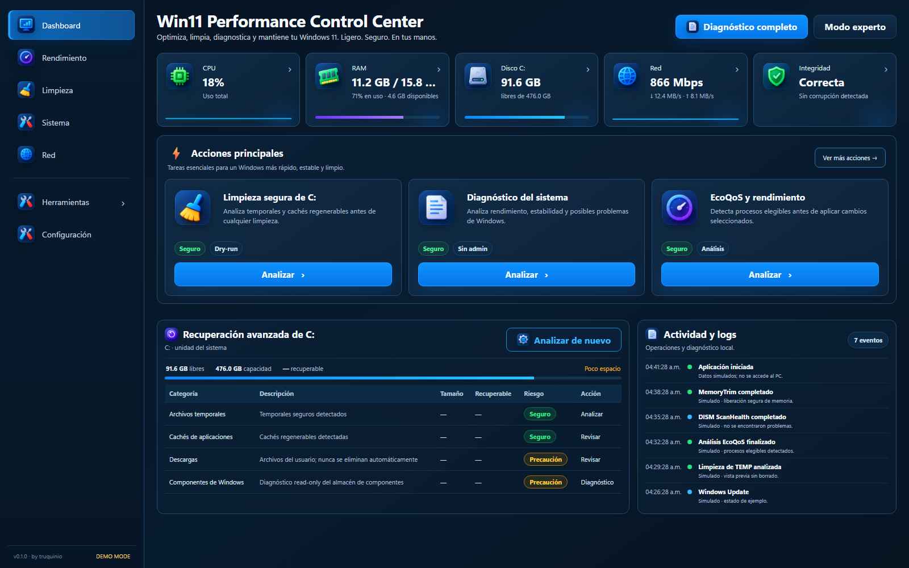

Win11 Performance Control Center
Diagnóstico, mantenimiento controlado y análisis de Windows 11.

Qué demuestra
Arquitectura desktop con WPF + WebView2, contratos tipados, acciones controladas, elevación puntual y diseño orientado a verificación y rollback.